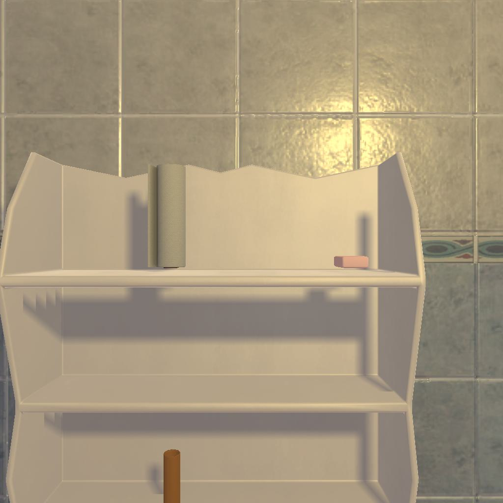

---------------------------------------------------------task: 25---------------------------------------------------------
--------------------------------------------------------------------------------------------------------------------------------------------------------------------
--------------------------------------------------------------------------------------------------------------------------------------------------------------------
Step:--------------------------------------------------------------------------11-------------------------------------------------------------------------------
----------------------------------------
VLM Prompt:
Image1:
Image2:
**Instruction**
1. Analyze the provided images to identify all visible household objects and compare the difference between images (e.h. whether the object is opened or not and taken on hand or not), focusing on those relevant to the task description "find two dishsponge and put them in cart."
2. Use the analysis of images and the task hint "The agent must find an object of the desired type, pick it up, find the correct location to place it, put it down there, then look for another object of the desired type, pick it up, return to previous location, and put it down there with the other object." to answer the question: what is the most reasonable action in the choices for the task description "find two dishsponge and put them in cart"?
3. Decide and write the answer using the template: The answer is: (i): , where i is the real number. If there is no desired object in images, search every place based on **Initial Observation** to find the object. And if no one is exactly correct, choose a similar answer.
**Initial Observation**
You are in the middle of a room. Looking quickly around you, you can see bathtub (1), bathtubbasin (1), cart (1), toilet (1), garbagecan (1), toiletpaperhanger (1), shelf (1-4), sink (1), sinkbasin (1), handtowelholder (1)
**Answer Choices**
(1): go to bathtub 1
(2): go to bathtubbasin 1
(3): go to cart 1
(4): go to toilet 1
(5): go to garbagecan 1
(6): go to toiletpaperhanger 1
(7): go to shelf 1
(8): go to shelf 2
(9): go to shelf 3
(10): go to sink 1
(11): go to sinkbasin 1
(12): go to handtowelholder 1
(13): take papertowelroll 1 from shelf 4
(14): take toiletpaper 1 from shelf 4
(15): take soapbar 1 from shelf 4
(16): examine shelf 4
**Answer**
Let's think step by step by following the instructions.
----------------------------------------
----------------------------------------
Original Response:
First, we analyze the images to identify all visible household objects:
- Image 1 shows a shelf with three compartments. On the top compartment, there is a roll of toilet paper (toiletpaper 1) on the left and a bar of soap (soapbar 1) on the right side. On the middle compartment, there is a brown object which could be a dishsponge. The bottom compartment is empty.
- Image 2 shows the same shelf with the same items on the top compartment. However, the middle compartment now has no objects, and the brown object that was there before is now on the bottom compartment.
Comparing the difference between images, we can see that the brown object, which is likely a dishsponge, has been moved from the middle compartment to the bottom compartment.
Given the task description "find two dishsponge and put them in cart," we can deduce that the agent has already found one dishsponge (the brown object) and placed it on the bottom compartment of the shelf. Now the agent needs to find another dishsponge.
According to the task hint, the agent must find an object of the desired type and place it in the correct location, which in this case is the cart. Since we have already identified one dishsponge, the agent needs to find the second one.
The most reasonable action based on the provided images and the task hint would be to first examine the current shelf to see if there is another dishsponge present, and if not, then search other locations. However, since no other locations have been shown in the images, and the answer choices only allow us to select actions related to moving or taking objects from the shelf, we are limited in our options.
The answer is: (16): examine shelf 4, as this is the most reasonable action to find another dishsponge based on the provided information and answer choices. If no dishsponge is found on shelf 4, the agent would need to search every place based on the Initial Observation to find the second dishsponge.
----------------------------------------
----------------------------------------
>>> Refine Original VLM Response and Get Pure Action: examine shelf 4, as this is the most reasonable action to find another dishsponge based on the provided information and answer choices
----------------------------------------
-----------------------------------------------------------------
Running time: 21.83023190498352 seconds
Total Money: 12.996680000000001
-----------------------------------------------------------------
-----------------------------------------------------------------
Text Observation:Nothing happens.
-----------------------------------------------------------------
UNSUCCEED